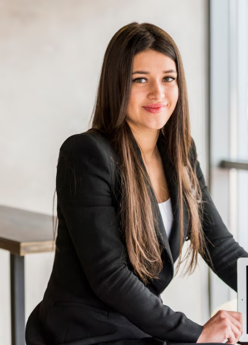

Claire Dumbellwood

Summary
Dedicated and hard-working office professional committed to excellence and efficiency in every task.
Education
- Associate of Science in Business Administration – Greenfield Community College, Greenfield, Massachusetts, 2016
- Doctor of Philosophy in Cognitive Neuroscience – Summit University, Boulder, Colorado, 2020
Work Experience
Skills
- Strong teamwork and collaboration :⭐️⭐️⭐️⭐️⭐️
- Excellent time management : ⭐️⭐️⭐️⭐️
- Leadership and initiative :⭐️⭐️⭐️⭐️⭐️
- Proven problem-solving skills :⭐️⭐️⭐️⭐️
Awards and Certifications
- Employee of the Month Award - July 15, 2023
- Employee of the Year Award - December 20, 2023
- Leadership Excellence Award - 10, 2024
Other Achievements (Non-Professional)
- Completed First Half-Marathon - November 5, 2023
- Organized a Community Clean-Up Drive - March 15, 2022
- Volunteered over 200 hours at a local food bank - September 10, 2021
Other